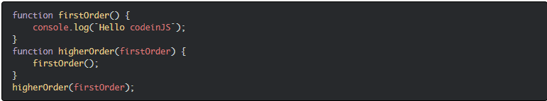

Top JavaScript Interview
Questions And Answers [2022]
This blog contains frequently asked Javascript interview questions. These Javascript interview questions are asked in each and every interview. This blog will help you to crack an interview and get yourself a dream job.
So, without wasting a time let’s check these Javascript interview questions one by one.
Basic Javascript interview questions
1. What is JavaScript?
Javascript is an interpreted language. Because of the newer ECMAScript feature, it can be compiled as well. A browser is responsible to execute or run the Javascript using web APIs. We can use Node.js to execute the Javascript outside of the browser as well. So, web APIs are responsible to execute Javascript inside the browser. While Node.js APIs are responsible to execute the Javascript outside the browser.
2. What are the features of JavaScript?
- Interpreted
- Dynamically typed
- Platform independent
- Object based
- Light-weight
- Synchronous
- Single-threaded
3. JavaScript Data Types
JavaScript supports 2 data types
- Primitive
- Object
Primitive Data Types
- Bigint
- Boolean
- Null
- Number
- String
- Symbol
- Undefined
Object Data Types
- Object
- Array
- Map
- Set
- Date
- Error
- Json
4. What is ECMAScript?
ECMAScript is a specification to write standard Javascript. It provides some rules and regulations. Browsers implement these rules to create Javascript engines.
5. What are different versions of ECMAScript?
| Version | Description and Release |
|---|---|
| ES1 | June 1997 |
| ES2 | June 1998 |
| ES3 | June 1999 |
| ES4 | Abandoned |
| ES5 | December 2009 |
| ES6 | June 2015 (ES2015) |
| ES7 | June 2016 (ES2016) |
| ES8 | June 2017 (ES2017) |
| ES9 | June 2018 (ES2018) |
| ES10 | June 2019 (ES2019) |
| ES11 | June 2020 (ES2020) |
6. What are features of ES6?
Here is the list of ES6 features.
- let and const Keywords
- Arrow Functions
- Default Parameters
- Template Strings
- Destructuring Assignment
- Enhanced Object Literals
- Rest Parameters
- Spread Operator
- Promises
- Classes
- Modules
7. What are scopes in Javascript?
The scope refers to the current execution context. It specifies the accessibility of variables and functions. There are three scopes in Javascript.
- Global scope
- Function scope
- Block scope
8. Difference between let, var, and const
| var | let | const |
|---|---|---|
| Available from the beginning. | Introduced in ES6. | Introduced in ES6. |
| Global as well as function scoped. | Block scoped. | Block scoped. |
| Can re-declare and update. | Cannot re-declare but it can be updated | Neither re-declare nor update. |
| Hoisted and initialized to undefined. | Hoisted but not initialized. | Hoisted but not initialized. |
9. Which one should we use between let, var, and const?
- Always declare variables with the const keyword.
- If the value of a variable is going to change in the future, then declare it with the let keyword.
- Avoid using the var keyword.
10. What is Temporal Dead Zone?
The Temporal Dead Zone is the behavior of Javascript where the state of a variable is not reachable. It only happens when we declare a variable with the let and const keyword. Accessing a variable with let and const before its declaration causes the Reference Error.
11. What is hoisting?
The hoisting is the process of moving variable and function declarations to the top of the scope. Javascript only hoists declaration. It does not hoist initializations.
12. Whether Javascript is object-oriented or object-based?
Javascript is object-based in nature. Because it does not support polymorphism. Polymorphism consists of method overloading and method overriding. There is no concept of overloading or overriding in Javascript. The default behavior of Javascript is to overwrite the function. Hence Javascript is an object-based programming language.
Javascript interview questions on asynchronous operations
13. Is Javascript synchronous or asynchronous?
Javascript is synchronous and blocking in nature. Synchronous means to execute code in sequence. It does not execute the next block of code until and unless the execution of earlier code.
14. How does Javascript execute asynchronous code?
Javascript uses callbacks, promises and async/await to execute asynchronous code.
15. What is callback?
The callback is a function passed to another function as an argument. This passed function executes later. Usually, callbacks achieve asynchronous operations in Javascript.

16. What is callback hell?
The callback hell happens when we use multiple nested callbacks. This problem occurs for dependent asynchronous operations (where we need to wait for the result of the previous asynchronous call).

17. How can we avoid callback hell?
We can avoid the callback hell problem by using promise and async-await.
18. What is promise?
The promise is useful to achieve asynchronous programming in Javascript. It is an object representing the completion or failure of an asynchronous operation.
The promise was introduced in ES6. It was introduced to overcome the limitations caused by the callback. The promise is useful for single as well as multiple asynchronous operations.
19. What are the states of promise?
A promise can be in one of these states:
- Pending: initial state, neither fulfilled nor rejected.
- Fulfilled: meaning that the operation completes successfully.
- Rejected: meaning that the operation failed.
20. What is promise chaining?
Promise chaining means passing a promise to another promise. Sometimes, we have to make an asynchronous call based on the result of the previous asynchronous call. For this purpose, we can use promise chaining. We can achieve the promise chaining by using promise instance methods (then(), catch(), and finally()).
21. How can we achieve multiple parallel asynchronous requests using promise?
Sometimes we need to call multiple requests on a single page. We can achieve this by sending requests in parallel. The promise provides some helpful methods to work with parallel requests. Here is the list of methods.
- all()
- allSettled()
- any()
- race()
22. What is async and await?
The async keyword with a function represents that function as asynchronous. The async function returns the promise. Await keyword is used to represent the asynchronous operation inside the async function.
The async and await is syntactic sugar over the promise.

23. Difference between Promise and Callback
| Callback | Promise |
|---|---|
| The callback is a function passed to another function as an argument. | A promise is an object representing the completion or failure of an asynchronous operation. |
| It suffers from a callback hell problem for sequential asynchronous calls. | We can use promise chaining for sequential asynchronous code. |
| It is difficult to use callback for parallel asynchronous calls. | It provides different methods to work with parallel multiple requests. |
| Error handling is complex. | Error handling is easy. |
24. Which one is better between callback, promise and async-await?
The callback is the old way to handle asynchronous operations. The promise provides a better way to handle asynchronous operations. It provides different methods.
Async and await is the syntactic sugar over the promise. It provides a way to write asynchronous code in a synchronous way. In modern applications, a lot of developers prefer async and await since it is easy to write and maintain.
Javascript interview questions on functions
25. What is closure?
The closure is a function declared inside another function. The inner function has access to the outer function’s variables and parameters. The outer function should return an inner function to the outside world.
Generally, closures were useful to achieve encapsulation in JavaScript before the introduction of class.
26. What is an anonymous function?
An anonymous function is a function without a name. Mostly, it is useful for three purposes.
We can store an anonymous function in a variable. It can be passed as an argument to another function. Similarly, we can return an anonymous function from a function.
27. What is a function expression?
It is possible to store a function into a variable in Javascript. The entire term is known as a function expression. We can call the variable to execute the stored function.

28. What is an arrow function?
An arrow function is a just syntactic sugar over function expression. It is also termed a fat arrow function. It is the shortest syntax to declare a function.

29. What is first-class function?
A programming language is said to have a first-class function if the function in that language is treated like any other variable. In such a language, we can pass the function to another function (callback). We can store a function into a variable. Moreover, we can return a function from another function (closure).
30. What is first-order function?
A first-order function is a function that doesn’t accept another function as an argument. As well as it doesn’t return a function.
31. What is higher-order function?
The higher-order function accepts a function as an argument. Besides that, it also returns the function as a value.
32. What is unary function?
A unary function is a function that accepts exactly one parameter.
33. What is pure function?
A pure function is a function that returns the same output over the input. It never mutates the global variables. A pure function never modifies the global state of variables or any other data members. It only depends on the input arguments of the function.
Some common terminologies for the pure function are:
- A function that doesn’t modify the existing memory location is called pure function.
- A function that doesn’t modify the actual parameter is called pure function.
- A mutation is a bad thing. So never modify the actual parameter of the function.
34. What is IIFE?
IIFE stands for Immediately Invoked Function Expression. It starts its execution immediately after the definition. There is a general rule in JavaScript. Never pollute a global scope. Writing function in global scope is not a good thing. IIFE creates a function in a local scope.
IIFE prevents access of variables to the outside world. It also prevents pollution of the global scope. Here is an example of IIFE.
35. What is currying function?
Currying is the process of converting a function with n arguments into n number of functions.

36. What is nested function?
The nested function is a function that is defined inside another function.
37. What is ‘this’ keyword in JavaScript?
Javascript runtime sets the context for each function. The context is identified by using this keyword. The this keyword refers to the context where the function is called. It does not belong to the context where the function was created.
In an arrow function, this always points to the current surrounding context. It means where the function is created. We cannot change the context of an arrow function.
38. What is call() method?
We can change the context of the function using the call() method. We can explicitly specify where this should refer to.
39. What is apply() method?
We can use apply() method to change the context of function similar to like call() method. The only difference is we can pass the parameters as an array.
40. What is bind() method?
The bind() method is also useful to change the context of a function. It was introduced in ES5. The bind() method does not execute the function immediately. Instead, it returns a new function with the context.
41. What is the difference between Call, Apply and Bind?
| Call() | Apply() | Bind() |
|---|---|---|
| Changes the context of a function (this). | Changes the context of a function (this). | Changes the context of a function (this). |
| Introduced in ES3. | Introduced in ES3. | Introduced in ES5. |
| Parameters can be passed as comma-separated. | Parameters can be passed as an array. | Parameters can be passed as comma-separated. |
| Executes the function immediately. | Executes the function immediately. | Does not execute the function immediately. Instead, return a new function. |
Javascript interview questions on ES6 features
42. What is class in Javascript?
The class is a template to create objects. The class is a special function in Javascript. Basically, it is the syntactic sugar over function prototype. It is introduced in ES6.
43. How to create private members in class?
The class members are public by default. We can create private class members by using the hash (#) prefix.

44. How to create static members in class?
We can create static properties and methods in class using the static keyword. We can access static members by using this: className.property or className.method.

45. What is template string?
We can write string using backticks () in Javascript. It provides a better way to write multiline strings. Moreover, we can insert a variable inside it using the ${} syntax.
46. What are default parameters?
Default parameters allow us to initialize function parameters to default values. They were introduced in ES6. We had to use the logical OR operator for default values prior to default parameters.

47. What is spread operator?
The spread operator expands iterables (array, object, string) into a single value. Here is a list of uses of the spread operator.
- Spreading arrays, objects, and strings into single value.
- Copying an array.
- Concatenating arrays.
- Spreading element on function call.
48. What is rest parameter?
Rest parameter is an improved version of handling function parameters. We can pass any number of parameters to a function. These parameters can be accessed like an array.
49. What is array destructuring?
Javascript interview questions for frontend
50. What is event bubbling?
The event bubbling is the type of event propagation. In such a case, when we trigger the event of the innermost element, it successively triggers the event of all the parent elements till the outermost parent.
51. What is event capturing?
Event capturing is the type of event propagation. In such a case, when we trigger the event of the outermost element, it successively triggers the event of all the child elements till the innermost child.
52. What is DOM?
The DOM stands for Document Object Model. The DOM defines a standard for accessing documents.
It defines:
- The HTML elements as objects.
- The properties of all HTML elements.
- The methods to access all HTML elements.
- The events for all HTML elements.
53. What is difference between document and window?
| Window | Document |
|---|---|
| It is the root element in the web page. | It is a direct child element of a window object. It is also known as Document Object Model (DOM). |
| We can access it using the window keyword. | We can access it using window.document or document. |
| It provides methods like alert(), confirm(), etc. | It provides methods like getElemenetById(), createElement(), etc. |
54. What is cookie?
The cookie refers to just the textual information about a website. It is used to remember the user information.
55. What is session storage?
The session storage can be useful to store information in the browser. The sessionStorage object lets us store the data in key/value pair. It stores the data for one session only.
56. What is local storage?
The local storage allows us to store the data in the browser similar to session storage. The local storage data has no expiration time.
57. What is difference between cookie, session storage, and local storage?| Cookies | Session storage | Local storage |
|---|---|---|
| It is accessible on the client as well as server-side. | It is accessible on the client-side only. | It is accessible on the client-side only. |
| The storage capacity is 4KB. | The storage capacity is 5MB. | The storage capacity is 5MB. |
| We can add the expiration time. | It expires as soon as the tab or browser is closed. | The data is not expired till we clear it. |
59. How do you access history in Javascript?
The window.history object contains the browser’s history. We can access the history using back() and forward() methods.
Miscellaneous Javascript interview questions
60. What is call stack?
The call stack is used to keep track of multiple function calls. It is like a real stack in data structures. We use a call stack to memorize which function is running right now.
61. What is event loop?
The event loop is a queue of callback functions. When an async function executes, the callback function is pushed into the queue. The queue places it onto the function execution stack whenever the stack becomes empty.
62. How can we handle exceptions in Javascript?
We can use a try-catch block to handle exceptions in Javascript.

63. What is throw keyword?
The throw statement is useful to throw user-defined exceptions. The execution of the code after the throw statement is stopped. And the control is passed to the first catch block.
64. What is finally block?
65. What is JSON?
JSON stands for JavaScript Object Notation. It is a lightweight text-based medium to store and transmit data across networks. It is generally useful for transmitting and storing data in modern applications.
66. JSON methods in Javascript
JSON offers two methods to work with it.
- parse(): The method converts a JSON string to a corresponding Javascript object or value.
- stringify(): The method converts a Javascript object or value to a valid JSON string.
67. JSON data types
JSON supports the following data types.
- String
- Number
- Boolean
- Null
- Object
- Array
68. What is strict mode in Javascript?
Strict mode allows writing code in a strict operating context. We can write secure Javascript code using it. It notifies bad syntax by throwing errors. We can declare strict mode at global as well as function scope.
69. What is NaN?
NaN stands for Not a Number. It represents a value that is not a valid number. We get this value whenever we try to perform mathematical operations on an invalid number.
70. What is undefined?
The undefined property indicates that a variable has no value or is not declared at all. The type of undefined is undefined too. We can empty any variable by setting the value to undefined. The function returns undefined if a value is not returned.
71. What is null?
The null is one of Javascript’s primitive values. It represents the absence of object value. The type of null is Object. We empty a variable by setting the value to null.
72. What is difference between undefined and null?
| undefined | null |
|---|---|
| It indicates that a variable has no value or is not declared at all. | It represents the absence of object value. |
| The type of undefined is undefined. | The type of null is Object. |
| It represents the absence of a value of a variable. | It represents the absence of a variable itself. |
73. What is the difference between == and ===?
The == stands for comparison operator. This operator transforms both the operand to the same type before comparison.
The === stands for strict equality comparison operator. This operator returns false if the operands are not of the same type.
75. What is call by value?
We can invoke a function in two ways: call by value or call by reference. While invoking a function, we pass values of variables to it. If the function changes the value of the parameter, then this change doe not reflect globally or in the calling function.
Primitive data types are passed to functions by value.
76. What is call by reference?
While invoking a function, we pass the address (reference) of variables to it instead of the actual value. If the function changes the value of the parameter, then this change reflects globally or in the calling function.
Object data types are passed to function as a reference.
77. Shallow copy vs deep copy
| Shallow Copy | Deep Copy |
|---|---|
| A shallow copy means copying all the values from the original variable but still keeping connected to the original variable. | Deep copy means copying all the values from the original variable and disconnecting. |
| Certain sub-values can still be connected to original variables. | It disconnects from the original variable and creates a separate copy. |
| Object data types are shallow copied. | Primitive data types are deep copied. |
78. Which memory Javascript uses?
Javascript uses both stack and heap memory.
79. Does Javascript use garbage collection?
Yes. javascript uses the garbage collection technique. Once there is no use of variables, they become ready to be garbage collected. It is taken care of by the Javascript engine itself.